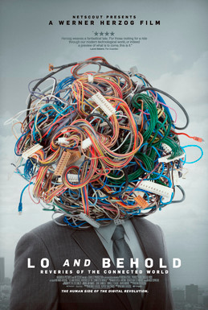

Lo and Behold, Reveries of the Connected World

Werner Herzog
2016
98 minutes
Wikipedia link
IMDB link
This is text.
Time to choose something different:
- Got anything with a longer title? - Turn to section 105
- Modern technology all just seems like witchcraft to me! - Turn to section 39
- No actual Tenenbaums were interviewed for this documentary, but some of those interviewees had reputations that aged like milk. - Turn to section 184